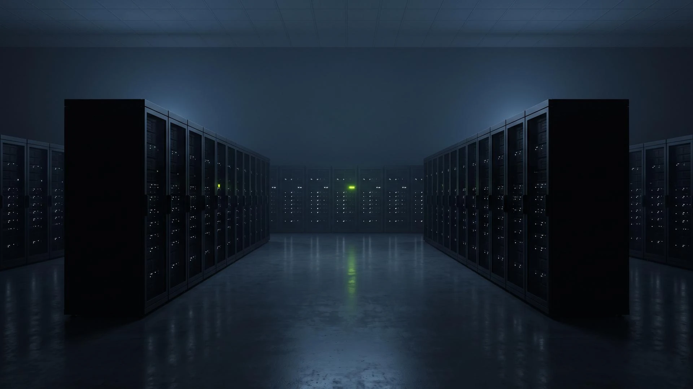

2026-10-14
Edge builds in every region
Builds now start in the region you deploy to. Median build time fell from 71 s to 42 s.
KRN-1024 · Issue tracking and deploys in one place
Ferrule links every issue to its branch, its review and its deploy, so the team sees what changed, where it went and who owns what broke.
Workspace
My issues 12 Inbox 3 Deploys AlertsTeams
Platform Payments API Mobile42 s
Median build time
99.98%
Deploy success, last 30 days
3.1 h
Report to fix, median
4,200
Engineering teams
KRN-200 · Workflow
Three habits, one tool: triage fast, link every change, and hand alerts to the people who can fix them.
KRN-201
Triage in one pass
New reports land in one queue with owner, priority and duplicate hints already filled.
How triage worksKRN-202
Deploys linked to issues
Every merge shows which issues it closes and which environment it reached.
See the deploy logKRN-203
Alerts with an owner
Error spikes open an issue for the team that shipped the change, with the commit attached.
Read about alerts
OPS-77 · Observability
Traces, logs and deploy markers on one timeline, kept for 30 days on every plan.

CI-42 · Deploys
Builds run next to the region they deploy to. Rollouts start at 10% of traffic and widen only when error rates stay flat.
Changelog
2026-10-14
Edge builds in every region
Builds now start in the region you deploy to. Median build time fell from 71 s to 42 s.
2026-10-07
Duplicate hints in triage
New reports show the three most similar open issues before you file them.
2026-09-30
Command menu everywhere
Press ⌘K on any page to jump to an issue, a deploy or a trace.
Pricing
Team
$12 / seat / month
Unlimited issues, preview deploys, gradual rollouts and 30-day traces.
Start buildingFerrule, its prices and its metrics are fictional placeholders for this template.

KRN-1025
Import issues from a CSV or a spreadsheet in two minutes.
Import issues